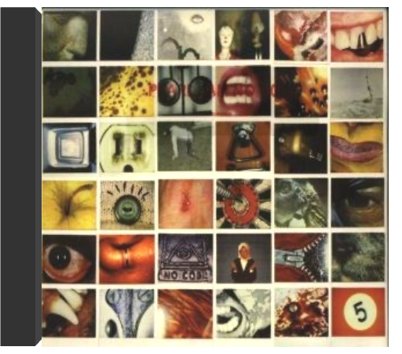
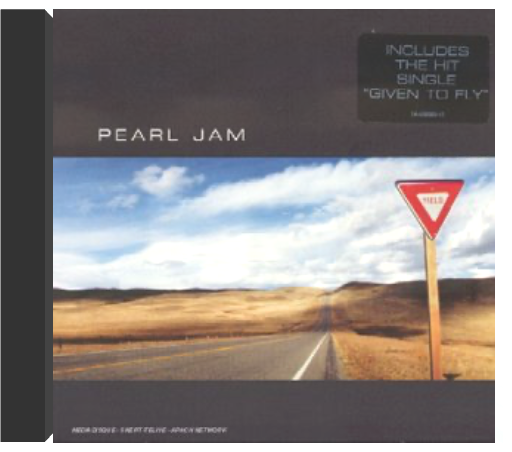

introduces marijatapat thomas introduces marijatapat thomas  'Pat Thomas Introduces Marijata' is a seminal Ghanian album that fuses highlife, reggae, folk, funk and soul, from legendary vocalist Pat Thomas. Originally released in 1976 on Gapophone Records. 'Marijata' was a group made up of three members - Kofi 'Electric' Addison on drums, Bob Fischlan on organ and Nat Osmanu on guitar, hailing from Ghana. Pat Thomas career began in 1969 with the 'Broadway Dance Band', leaving a year later to join the 'Uhuru Dance Band'. He then played with Ebo Taylor's 'Blue Monks' and finally formed the 'Sweet Beans' in 1973 where he really made his name. The group released 'False Lover' in 1974, split and then reformed as Marijata, releasing 'Marijata' (also available on Mr Bongo) and this album, 'Pat Thomas Introduces Marijata'.  tenpearl jam tenpearl jam A coups de déclarations, Pearl Jam et Nirvana s'étaient mené la guerre en musique au début des années 90. Les frères ennemis du grunge partageaient pourtant leur goût pour la révolte, les guitares bruitistes, les performances scéniques extrêmes... Premier album de Pearl Jam, Ten est une grosse bouffée de fraîche brutalité. Eddie Vedder alterne les coups de gueule et les élans d'optimiste, sa voix puissante et éraillée surfant sur les inflexions de la guitare agile de Stone Gossard. Les compères jettent d'ailleurs ici les bases de leur son, avant de s'orienter, la folie du grunge achevée, vers un rock plus carré et plus classique. En attendant, ils signent deux premiers hits magistraux : "Jeremy", portrait d'un adolescent torturé, devenu l'hymne des gamins mal dans leur peau, et "Alive", son riff de guitare joué en boucle et son refrain sur lequel Vedder célèbre le fait de pouvoir survivre à tout, qui sont devenus des standards, indispensables à toute bonne discothèque rock. —Isabelle Chelley  vspearl jam vspearl jam Il ne faudra bien sûr pas un instant penser que le sympathique camélidé qui orne la jaquette donne le ton de ce deuxième album des rois du grunge de Seattle. A ce compte-là, un rhinocéros contrarié eût mieux convenu à la charge frontale que mènent Eddie Vedder et son gang au long de ces trois quarts d'heure de rage et d'électricité. Vedder se montre d'ailleurs remonté comme une horloge et ferait pâlir d'envie les grands hurleurs des groupes heavy metal des 70's (ceux qui ont inspiré le son de Pearl Jam, les Led Zeppelin et autres Black Sabbath). Stone Gossard s'avère un disciple zélé de Tommy Iommi et de Jimmy Page ("Do" ou "Glorified G" contiennent des solos de guitare étourdissants). Pourtant la fureur qui domine, ce tir de barrage rythmique qui cloue au sol, n'empêchent pas les moments de répit ("Daughter") où le groupe rentre les griffes. Après un premier album qui aurait pu faire craindre que Pearl Jam avait tout dit, Vs démontre qu'il commence juste à déchiffrer et à inventer. Des trouvailles vocales ("WMA") des perles mélodiques ("Rearviewmirror", et son faux air à la R.E.M., de même que le très léché ("Elderly Woman Behind The Counter In A Small Town") et une maîtrise générale d'un style que l'on aurait pu craindre épuisé - le grunge - font de ce CD une réussite réjouissante. —José Ruiz  vitalogypearl jam vitalogypearl jam Avec Versus, Pearl Jam n'avait pas totalement réussi à transformer l'essai. Ce deuxième opus n'avait rien de mauvais, mais il n'était tout simplement pas à la hauteur de Ten. Mais voilà, depuis, Vitalogy est sorti. Et, soyons clair, la première écoute fait l'effet d'un uppercut dans la mâchoire ! Pearl Jam s'inscrit dans la lignée de ces groupes qui n'acceptent pas de stagner ni de se répéter. Là où on aurait pu attendre des chansons rock évoluées ou des ballades grunge, Pearl Jam préfère nous balancer un album violent, dur, et noir. Évidemment, tous les morceaux ne sont pas dans la lignée de "Spin The Black Circle", brûlot punk-rock évolué, à base de guitares incisives et de batteries destructrices. On y trouve aussi deux pures merveilles de mélancolie : "Nothing Man" et "Better Man", l'une quasiment opposée à l'autre, et pourtant musicalement si proches. À noter également un "Tremor Christ" de toute beauté, basé sur une guitare répétitive, la basse prenant l'espace laissé libre pour créer sa propre mélodie, nous emmenant ainsi dans un voyage musical éloigné des vulgaires réalités de la vie. —Romaric Bullier no codepearl jam Quand on pense Pearl Jam, on pense d'abord grunge et scène de Seattle. En se penchant un peu plus sur le cas, on se rend compte de l'originalité du groupe. Quatrième album en date, No Code ne déroge pas à la règle. Pour ceux qui ne connaissaient que Ten, le choc va être rude. Car depuis ce premier album, les cinq de Seattle ont fait du chemin. Ils se sont posés musicalement. Composé et enregistré à la même époque que Mirror Ball de Neil Young, avec les musiciens de Pearl Jam, l'influence est indéniable. Mais ils ont su s'approprier le son du maître et en faire quelquechose de très personnel. Parmi toutes les chansons qui composent No Code, on trouve quelques-unes des plus belles mélodies de Pearl Jam. "In My Tree", tout d'abord, un morceau extrêmement poétique qui démontre encore une fois que le répertoire de Pearl Jam dépasse les limites du rock. Mais surtout, on peut trouver ici "Off He Goes", petite merveilles pop-folk, quelques accords de guitares d'une simplicité et d'une beauté désarmantes. Ne serait-ce que pour ce titre, il faut posséder No Code. —Romaric Bullier yieldpearl jam Est-il difficile d'être un des groupes phares de la scène grunge originelle après la mort de Kurt Cobain ? Cette question, Eddie Vedder semble avoir cessé de se la poser. Après une courte période de flottement, il nous offre un des meilleurs albums de Pearl Jam, si ce n'est le meilleur. Car si Yield n'est pas un chef-d'œuvre du rock américain, il en a quand même sacrément l'air.  lost dogspearl jam lost dogspearl jam Pearl Jam est un des rares groupes issus de lâge dor du grunge de Seattle, à avoir résisté au Nevermind de Nirvana. Aussi intègre que leur mentor Neil Young (quils accompagnent sur lalbum Mirrorball), le quintet carbure au binaire, un binaire envoûtant lardé de riffs bien lourds et de mélodies taciturnes. Pour clore 12 années partagées avec le label Sony, Pearl Jam a exhumé 30 titres rares dont 14 inédits des sessions denregistrement de leurs 7 albums studio – exception faite de Vitalogy. Une sélection non chronologique de leur talents divers et variés jusque-là offerts en cadeaux de Noël aux abonnés de leur fan-club. Un hommage posthume à Layne Staley, chanteur dAlice in Chains, une reprise dHolland & Dozier "Leaving Here", un rap-metal dédié au chauffeur de bus de la tournée avec les Red Hot "Dirty Frank" ou un titre composé pour la BOF de "Dead Man" pimentent cette rétrospective chargée de ballades, mélancolique comme "Strangest Tribe" ou hendrixienne comme "Yellow Ledbetter". Nul besoin dêtre un inconditionnel de Pearl Jam (qui notera labsence dinédit extrait du soundtrack de Singles ou du Ep Merkinball) pour apprécier ce Lost Dogs que personne ne pourra qualifier de fond de tiroir. —Sabrina Silamo |


 Made with Delicious Library
Made with Delicious LibraryNancy, State zipflap congrotus delicious library Thomas, Julien